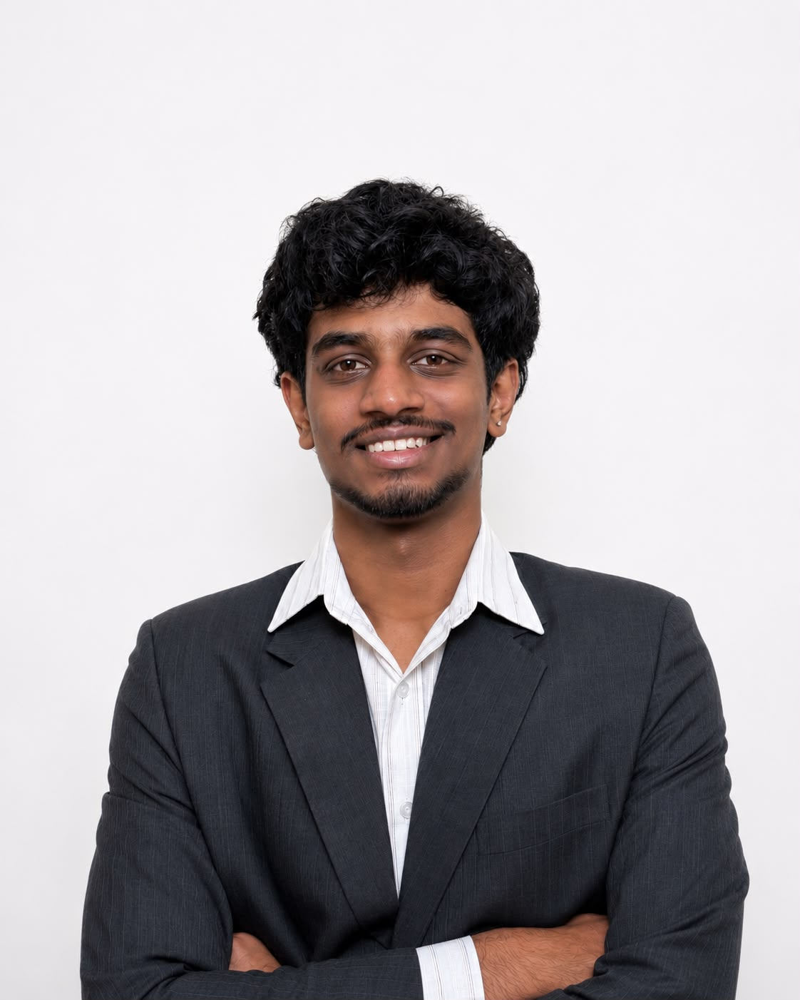

Now reviewing the campaign set
Build a year that actually runs well.
I am running for Unit Designee with a simple standard: students should hear early, plan clearly, and never feel locked out of opportunities because communication was late or messy. This role already sits between the batch, NASA, and the administration. It should work like a system, not a formality.

A-01 · Vision
Make the role useful every week, not visible once a year.
Unit Designee should not only announce things. It should create rhythm: opportunities tracked early, student input taken seriously, and council work made easier to follow from the outside.
"The job is to make sure no one hears about something important too late and no decision feels like it arrived from nowhere."
Every trophy, seminar, zonal, and convention update should be tracked in one visible place as soon as it is announced.
The batch should get short, readable updates after meetings instead of relying on word-of-mouth or whoever happened to ask.
Council work should include systems that reduce friction and events that people genuinely want to show up for.
A-02 · Agenda
Eight concrete upgrades.
Each point below starts from how things usually work now and flips into what I would run instead. The interaction is lighter than before, works properly on touch screens, and keeps the information readable on smaller devices.
I would maintain a running competition log with dates, requirements, and announcement timing so teams can prepare early instead of scrambling late.
I would coordinate earlier with the Unit Secretary and administration so approvals, travel expectations, and support do not become last-minute blockers.
Regular check-ins with class representatives would create a cleaner route for feedback and reduce the feeling that decisions only appear after the fact.
A single coordination rhythm across NASA, welfare, and events would prevent schedule clashes and make responsibilities much easier to follow.
I would publish short written updates after council meetings and NASA sessions so important points are visible to everyone, not only to those who asked directly.
Smaller hangouts, better end-of-sem energy, and formats people want to join would make council work feel less like unpaid admin and more like community.
Merch should be open to student ideas and judged by whether people would wear it outside campus, not just whether it exists in time.
I would keep one simple anonymous feedback route that is regularly reviewed, acknowledged, and used to spot issues before they become bigger.
A-03 · Operating Style
How the work would feel in practice.
The point is not just better promises. It is a better operating system: fewer missed updates, cleaner student-admin communication, and a more visible rhythm to the role.
Competitions, conventions, and council notes should live in a format everyone can understand fast on both laptop and phone.
Good communication is mostly about timing. Early notice is what turns an opportunity into an actual option.
The council can stay professional and still create student experiences that feel human, fun, and worth caring about.
A-04 · Vote
Back the version of this role that communicates early and follows through.
Opportunities should appear with enough lead time to prepare properly.
Students should know what is happening without hunting through old messages.
The council should feel easier to understand, easier to approach, and more worth engaging with.
Vote Kethan H on 18 Jul.
If the role is going to sit at the center of information, planning, and representation, it should be run with structure. That is the whole pitch.
Unit Designee
NASA 2026
1 vote : 1 vote